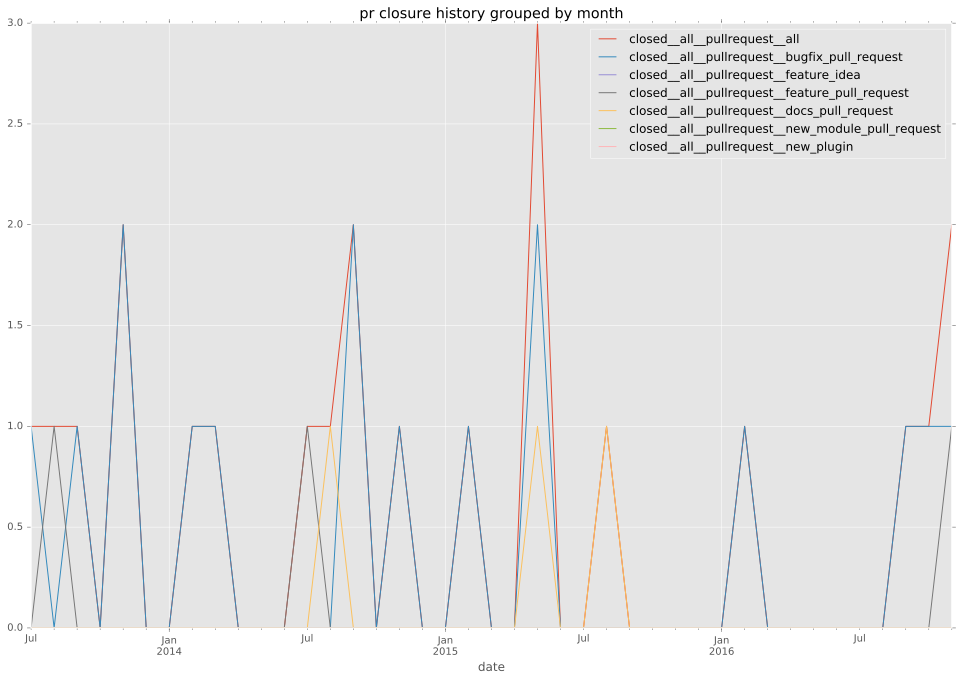
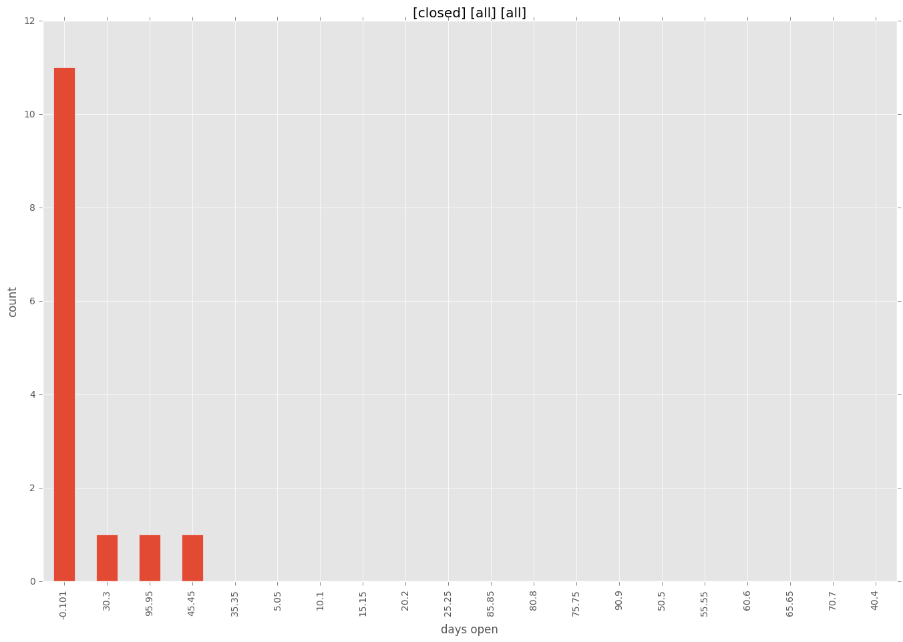
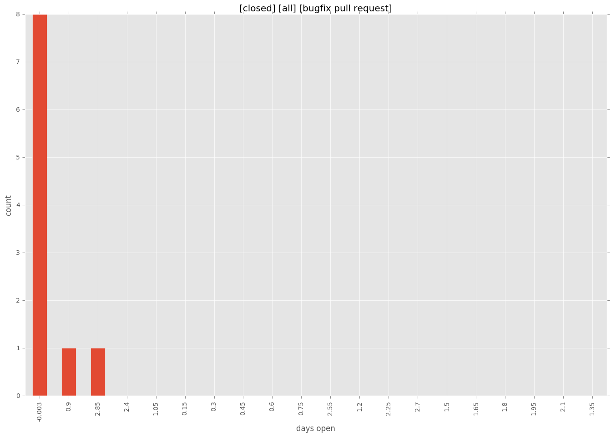

total issue counts
feature pull request: 2
pullrequest: 12
docs pull request: 1
bugfix pull request: 9
feature idea: 1
issue: 2
bug report: 1
issue history
pullrequest history

days open by issue type
bugfix pull request
count: 10
std: 0.966091783079
min: 0
max: 3
median: 0.0
mean: 0.4
all
count: 16
std: 34.968021105
min: 0
max: 101
median: 0.0
mean: 19.6875
pullrequest
count: 0
std: nan
min: nan
max: nan
median: nan
mean: nan
docs pull request
count: 2
std: 0.0
min: 101
max: 101
median: 101.0
mean: 101.0
feature pull request
count: 3
std: 17.8978583449
min: 0
max: 31
median: 31.0
mean: 20.6666666667
feature idea
count: 0
std: nan
min: nan
max: nan
median: nan
mean: nan
issue
count: 0
std: nan
min: nan
max: nan
median: nan
mean: nan
bug report
count: 1
std: nan
min: 47
max: 47
median: 47.0
mean: 47.0
closures grouped by total days open

